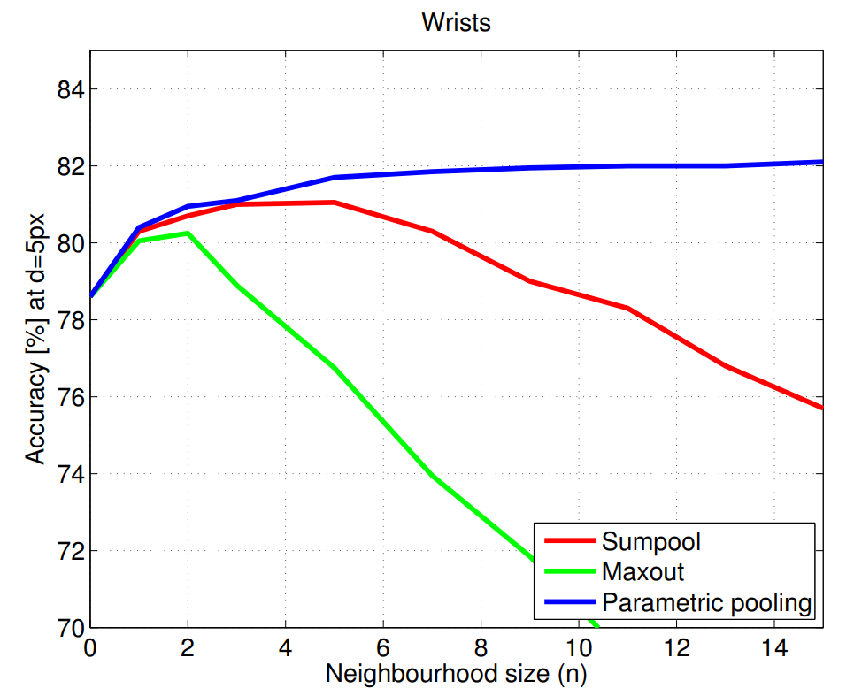
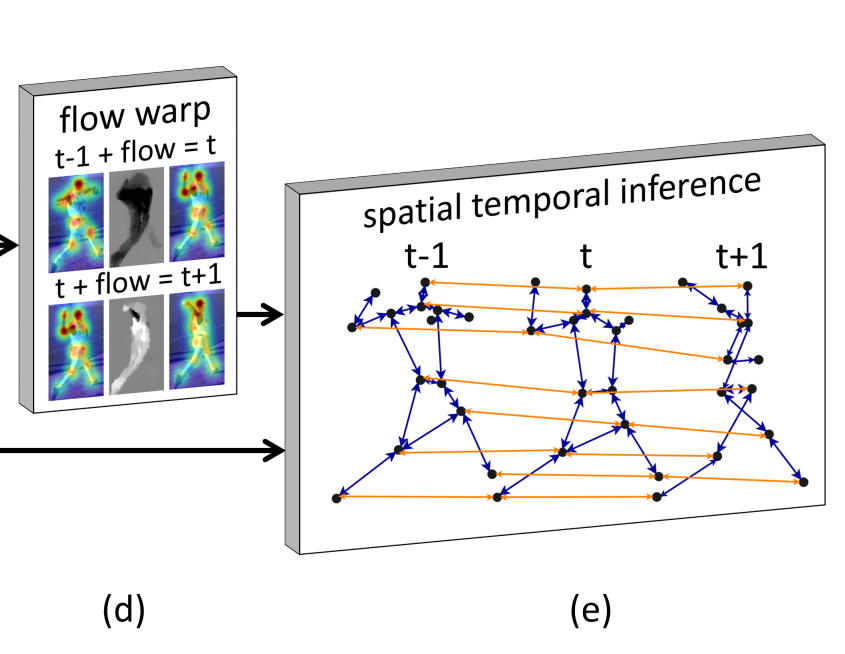
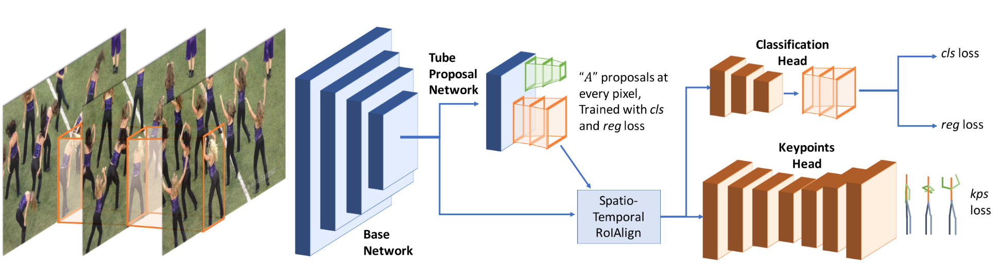

ICCV-2015 Flowing ConvNets for Human Pose Estimation in Videos

主要使用光流来提高估计的准确度。首先得到\([t-n,t+n]\)帧关节k的热力图，然后计算\([t-n,t+n]\)中所有帧到第t帧的光流，然后利用光流将其他帧的热力图和第t帧的对齐。记\(w_{t+1\rightarrow t}\)为第t+1帧到第t帧的光流，那么\(H_{t+1}\)根据光流对齐后的热力图可以表示为 \[ \hat{H}_{t+1}(x,y)=H_{t+1}(x-w_x^{t+1\rightarrow t},y-w_y^{t+1\rightarrow t}) \] 最后经过一个\(1*1\)的卷积（也就是通道上的加权平均）得到第t帧关节k的热力图。并且实验从下图的实验结果中可以发现，使用这种pooling的效果更好，而且随着n的增加效果稳步提升。

CVPR-2017 Thin-Slicing Network: A Deep Structured Model for Pose Estimation in Videos
本文把姿势估计分解成两个子问题，分别是Spatial Consistency和Temporal Consistency。对于Spatial Consistency，作者通过以下公式建模： \[ S(I,p)=\sum_{i\in V}{\phi_i(p_i|I)}+\sum_{(i,j)\in E_s}{\psi_{i,j}(p_i,p_j)} \] 首先我们把关节点按照骨骼连接起来，当作一张图，每个关节点就是一个节点，节点的集合表示为\(V\)，每根骨骼就是一条边，边的集合表示为\(E_s\)（这里的下标s表示Spatial），\(p_i\)表示关节点\(i\)，那么关节点估计可以转化为最小化上式。
\(\phi_i(p_i|I)\)用来表示给定输入图片\(I\)，\(p_i\)是第\(i\)个关节点位置的概率（ confidence values of part i based on the local appearance），这里的\(\phi_i\)用卷积神经网络来估计；\(\psi_{i,j}(p_i,p_j)\)表示的是关节点\(i\)和关节点\(j\)的匹配程度，这里利用spring energy model建模，可表示为 \[
\begin{align*}
\psi_{i,j}(p_i,p_j)&=w_{i,j}\cdot d(p_i-p_j)\\
&=w_{i,j}\cdot [\Delta x\ \Delta x^2\ \Delta y\ \Delta y^2]^T
\end{align*}
\] 其中\(w_{i,j}\)是可学习参数。
对于Temporal Consistency，作者以光流为切入点，公式如下 \[
\begin{align*}
&\sum_{(i,i^*)\in E_t}{\psi_{i,i^*}(p_i,p'_{i^*})}\\
=&\sum_{(i,i^*)\in E_t}{\psi_{i,i^*}(p_i,(p_{i^*}+f_{i^*,i}(p_{i^*})))}\\
\end{align*}
\] \(\psi\)和之前的一样，只是这个\(i^\star\)复杂了一点。这里的\(E_t\)是把相邻帧之间同一个关节点连接起来的边的结合，也就是下图中的橙色线。\(f_{i^\star,i}(x)\)表示的是按照\(i^\star\)所在帧到\(i\)所在帧的光流移动点\(x\)，其实就是下图中左侧flow warp。举个例子，先估计出\(t-1\)帧的关节点，然后按照\(t-1\)帧到\(t\)帧的光流，把每个关节点按照光流做propagate，propagate之后的关节点就是\(i^\star\)。
从不同帧使用Temporal Information估计同一帧的关节点，如果大家估计的差不多，那么说明有很好的一致性，关节点的连续性得到了保证。

最终的目的就是最大化上述两个式子，就能实现时空一致性。
CVPR-2018 Detect-and-Track: Efficient Pose Estimation in Videos
网络结构如下图所示。其实这个做法非常非常的简单，就是一个多任务学习，收到I3D的启发，把Mask RCNN改成了3D卷积的形式，原来的RPN（Region Proposal Network）改成了TPN（Tube Proposal Network）。这个Tube很好理解，原来RPN是在图上找一个矩形区域，那如果一个视频的话，连续T帧都在同一个位置划定一个矩形，连接起来不就是个Tube了。并且Mask RCNN本来就有一个head是用来做关键点检测的，嗯，所以他主要就是把2D卷积换成了3D卷积。这里的Spatio-Temporal RoIAlign其实就是对每帧上的RoI做RoIAlign，然后再按顺序拼接起来。

CVPR-2018 LSTM Pose Machines
套个LSTM就完事了，Temporal Information让他自己去学吧。